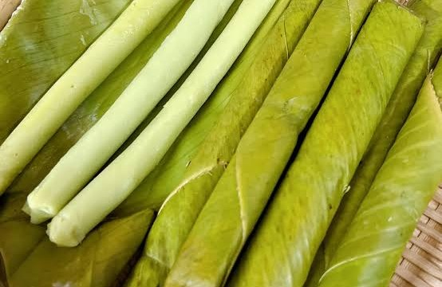
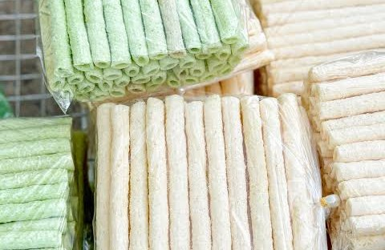
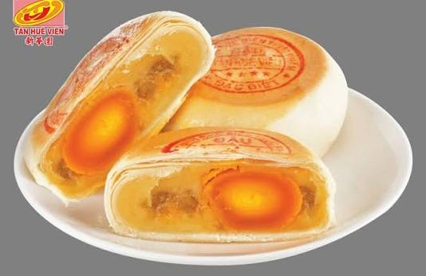
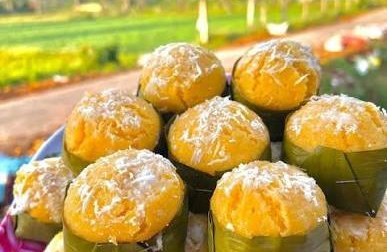
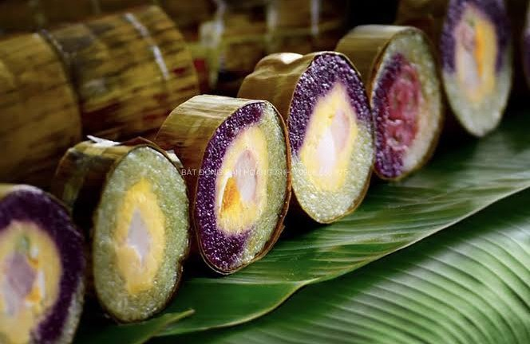

01/05/2026 · 5 bình luận
01/05/2026 · 5 bình luận
Bí quyết đổ bánh xèo giòn rụm
Khám phá nét ẩm thực độc đáo của vùng sông nước Cửu Long qua từng chiếc bánh dân gian.

02/05/2026 · 5 bình luậnBánh tét ngày Tết miền Tây
Khám phá nét ẩm thực độc đáo của vùng sông nước Cửu Long qua từng chiếc bánh dân gian.

03/05/2026 · 5 bình luậnGhé chợ nổi Cái Răng ăn bánh
Khám phá nét ẩm thực độc đáo của vùng sông nước Cửu Long qua từng chiếc bánh dân gian.

04/05/2026 · 5 bình luậnBánh pía Sóc Trăng - quà biếu
Khám phá nét ẩm thực độc đáo của vùng sông nước Cửu Long qua từng chiếc bánh dân gian.

05/05/2026 · 5 bình luậnCách làm bánh bò thốt nốt
Khám phá nét ẩm thực độc đáo của vùng sông nước Cửu Long qua từng chiếc bánh dân gian.

06/05/2026 · 5 bình luậnBánh da lợn lá dứa mềm dẻo
Khám phá nét ẩm thực độc đáo của vùng sông nước Cửu Long qua từng chiếc bánh dân gian.